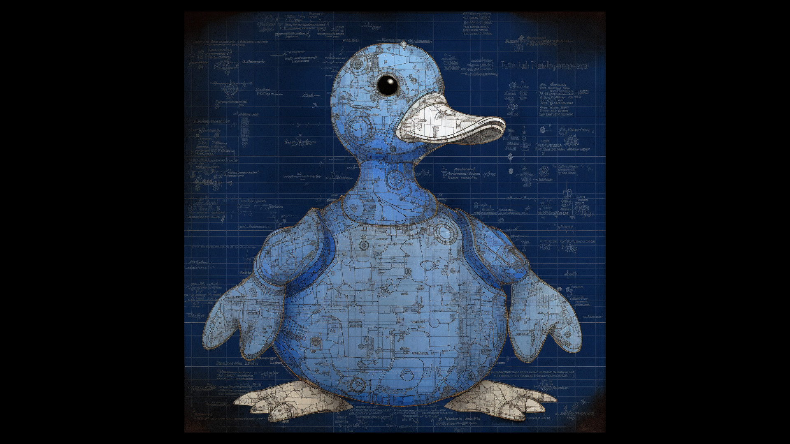

The Madness of Value Drivers in Duck-Based Assets: More Satirical Approaches for Value Creation
When it comes to investing in creative assets, one might question the validity of selecting duck assets as a sound choice. However, before dismissing the idea outright, it is essential to understand the concept of "value drivers." These factors contribute to making a particular asset unique and, therefore, potentially valuable. In this article, we will dive deep into the world of duck assets and explore how satirical value drivers can help identify potential investments.
The Allure of Duck Assets
Take Howard the Duck 19 as an example. On the surface, this comic may not seem like an extraordinary investment opportunity. However, it boasts a fascinating value driver that sets it apart from its predecessors and successors. The cover art pays homage to the iconic Amazing Spider-Man #50 comic cover by John Romita, making it a potentially attractive choice for market makers. So, despite the absurdity of the approach, there is still merit in considering duck assets as viable investments.
Assessing Value in Traditional Assets
When assessing the value of traditional comic assets, investors often turn to authentication reports from organizations like CGC. The fewer authenticated items available, the higher the premium and, subsequently, the value of the comics. But how does one evaluate the value of satirical assets, such as duck comics? That's where MALLARD™ comes in.
MALLARD™: A New Approach to Satirical Investments
MALLARD™ is a groundbreaking algorithm designed to evaluate duck-based assets using a unique set of value drivers. Instead of simply valuing comics based on traditional factors like first appearances of popular characters, MALLARD™ takes a more absurd approach. It assesses the value of duck comics based on criteria such as whether the duck smokes cigars or dons pants for the first time.
By examining unconventional value drivers, MALLARD™ aims to shed light on the absurdity of some traditional investment criteria. It also highlights the subjectivity of value assessment in creative assets, demonstrating how value drivers are inherently shaped by investor preferences.
Key Questions for MALLARD™
The initial set of questions MALLARD™ will consider when evaluating duck assets include:
- Does the duck wear clothes or just pants?
- Can the duck talk?
- Is the duck IP owned by an S&P500 company?
- Has this duck ever had a romantic relationship with a human?
- Is this duck an interdimensional being or from another planet?
These questions will be compared to actual comps (real-world value data) to make absurd arguments about the value drivers behind duck assets.
The Eye of the Beholder: A Cautionary Tale
The world of duck assets and MALLARD™'s satirical approach to investment serves as a powerful reminder that value is always in the eye of the beholder. Secondary market creative assets are subject to the whims of investors, and value drivers are only as significant as we make them.
It is crucial for investors to recognize the subjective nature of value drivers and the potential danger of blindly adhering to traditional investment criteria. By acknowledging the absurdity of some value drivers, we can develop a more nuanced understanding of the creative assets market and make informed decisions when selecting investments.
In conclusion, while the idea of investing in duck assets may seem absurd, it serves as a valuable exercise in questioning our preconceived notions of value. By adopting unconventional approaches, like MALLARD™'s satirical assessment of value drivers, we can challenge traditional investment criteria and gain a deeper understanding of the complex world of creative assets.